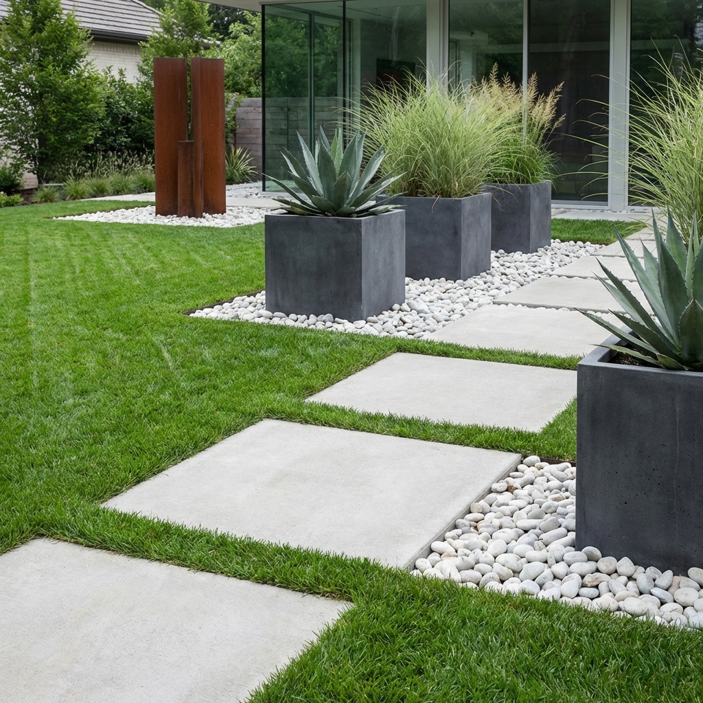
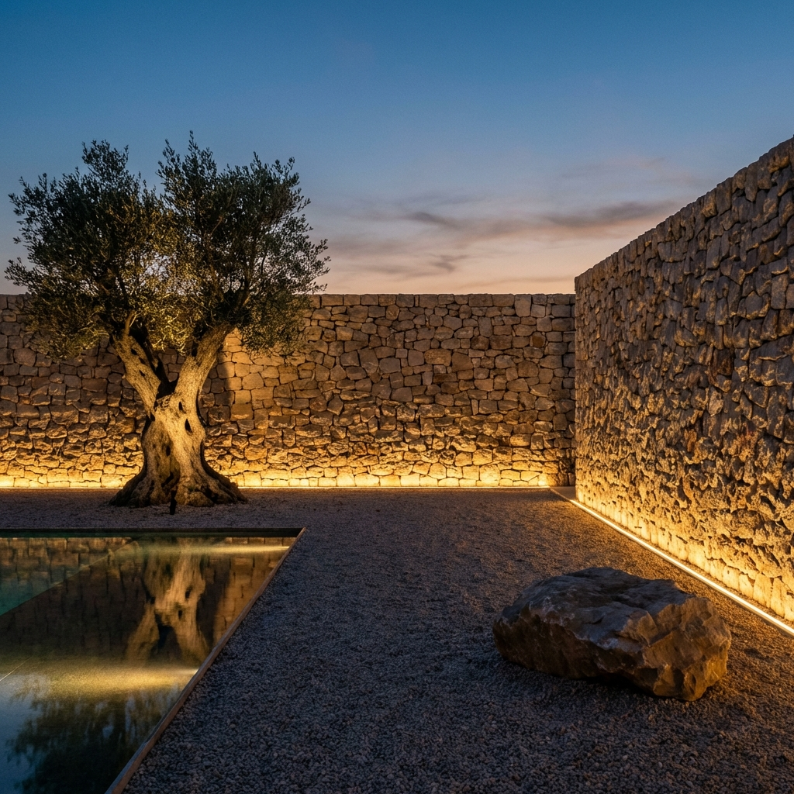

Karmaşadan uzak, göz yormayan ve ruhu dinlendiren bahçeler... Minimalizm, peyzaj tasarımında sadece bir görsel tercih değil, bir yaşam felsefesidir.
1. Renk Paletini Sınırlamak
Minimalist bir bahçede yüzlerce renk göremezsiniz. Genellikle yeşilin tonları hakimdir ve buna eşlik eden beyaz, gri veya ahşap tonları bulunur. Eğer çiçek kullanılacaksa, tek bir renk (örneğin sadece beyaz çiçekler) seçilerek güçlü bir etki yaratılır.
2. Geometrik Formlar
Bitkilerin doğal formları, keskin hatlı sert zeminlerle kontrast oluşturmalıdır. Dikdörtgen yürüyüş yolları, küp saksılar ve düz hatlı çim alanlar, bahçeye modern ve düzenli bir hava katar. "Simetri" veya "bilinçli asimetri" bu tarzın temel taşlarındandır.
3. Negatif Alan (Boşluk) Kullanımı
Her metrekareyi doldurmak zorunda değilsiniz. Boş bırakılan alanlar (negatif alanlar), dolu alanların daha değerli görünmesini sağlar. Geniş bir çim alan veya sadece çakılla kaplı bir bölüm, bahçenizin nefes almasını sağlar ve mekanı olduğundan daha büyük gösterir.
4. Işıklandırmanın Gücü
Minimalist tasarımda aydınlatma abartıdan uzak ve gizli olmalıdır. Bitkileri alttan aydınlatan spotlar veya yürüyüş yolunu belli belirsiz çizen şerit ledler, gece bahçenize heykelsi bir görünüm kazandırır. Işık kaynağının kendisi değil, yarattığı etki görünür olmalıdır.
5. Malzeme Seçimi
Doğal taş, brüt beton, ahşap ve metal... Malzeme çeşitliliğini en aza indirin. Örneğin zemin döşemesinde kullandığınız taşı, duvar kaplamasında da kullanarak bütünlük sağlayabilirsiniz. Bu görsel süreklilik, sakinlik hissini artırır.
Tüm Yazılara Dön